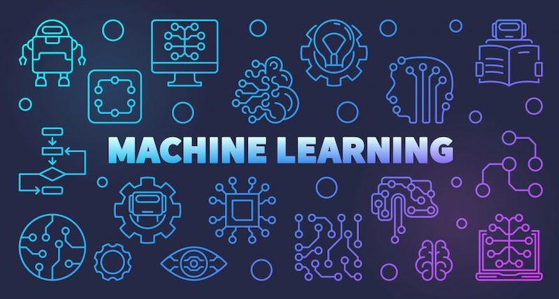

Xu hướng an toàn thông tin tại Việt Nam năm 2022
Theo báo cáo của Công ty an ninh mạng Viettel, năm 2022 dự báo sẽ có 7 xu hướng an toàn thông tin chủ yếu tại Việt Nam. Đặc biệt là xu hướng Cloud security - bảo mật điện toán đám mây. Những dự đoán này có ý nghĩa rất quan trọng giúp cá nhân, tổ chức và doanh nghiệp chuẩn bị nguồn lực kịp thời để bảo vệ hệ thống trước các rủi ro ngày gia tăng cao trên môi trường mạng.
Xu hướng 01: Nhu cầu Cloud security, bảo mật điện toán đám mây
Theo Bộ Thông tin và Truyền thông, thị trường dịch vụ Cloud ở Việt Nam được đánh giá sẽ rất phát triển, các nghiên cứu của những tổ chức nghiên cứu quốc tế uy tín cũng dự báo tốc độ tăng trưởng trung bình của thị trường cloud Việt Nam đạt 26% mỗi năm (cao nhất trong khu vực ASEAN) và cao hơn rất nhiều so với mức tăng trưởng trung bình 16% trên toàn cầu. Theo tính toán của VNeconomy, hiện có 56% doanh nghiệp dùng dịch vụ Cloud. Xu thế này đã bao phủ một loạt các doanh nghiệp lớn Việt Nam như VPBank, MartimeBank, VTV, Masan,… Ngoài ra, xu thể sử dụng điện toán đám mây tại các doanh nghiệp vừa và nhỏ cũng rất tiềm năng. Với khối chính phủ, việc triển khai đám mây Chính phủ G-Cloud tại Việt Nam trên cơ sở sử dụng các trung tâm dữ liệu hiện có của các bộ, ngành, địa phương. Nhu cầu về đám mây phân tán và điện toán biên chủ yếu được thúc đẩy bởi Internet of Things (IoT), trí tuệ nhân tạo (AI), viễn thông (telco) và các ứng dụng khác cần xử lý lượng dữ liệu khổng lồ trong thời gian thực. Đám mây phân tán cũng đang giúp các công ty vượt qua những thách thức trong việc tuân thủ các quy định về quyền riêng tư dữ liệu theo quốc gia hoặc ngành cụ thể. Gần đây hơn là cung cấp dịch vụ CNTT cho nhân viên và người dùng cuối do ảnh hưởng của đại dịch COVID-19. Theo Deloitte, hơn 97% nhà quản lý CNTT đang có kế hoạch phân phối khối lượng công việc trên hai hoặc nhiều đám mây để tăng cường khả năng phục hồi và hỗ trợ các yêu cầu quy định. Còn theo Gartner, đến năm 2024, hầu hết các nền tảng dịch vụ đám mây sẽ cung cấp ít nhất một vài dịch vụ đám mây phân tán thực thi tại điểm cần. Tuy nhiên, việc này cũng có thể tạo cơ hội cho các hacker tấn công hạ tầng cloud và các cơ sở dữ liệu của tổ chức, doanh nghiệp trên cloud. Các cuộc tấn công DDoS, tấn công APT, tấn công mã độc vào hạ tầng nền tảng cloud sẽ ngày càng mạnh mẽ trong các năm tới, điều đó dẫn tới nhu cầu giám sát ATTT trên cloud ngày càng mạnh mẽ hơn.
Xu hướng 2: Bảo vệ dữ liệu cá nhân, tổ chức ngày càng chặt chẽ
giúp của ChatGPT, thời gian soạn giáo án, giải đáp thắc mắc, nhận xét kết quả học tập của học sinh sẽ được rút ngắn hơn rất nhiều. Bên cạnh đó, nhà trường nếu ứng dụng ChatGPT trong giáo dục sẽ giảm bớt được phần nào khối lượng công việc, tăng năng suất, hiệu quả và chất lượng. Đồng thời, đối với các em học sinh, ChatGPT có khả năng tóm tắt tài liệu, nghiên cứu chuyên sâu, tìm kiếm thông tin – những điều mà trước giờ người học phải tốn rất nhiều thời gian mới có thể tổng hợp được từ nhiều nguồn khác nhau.
2. Thúc đẩy tinh thần tự học của học sinh
Xu hướng chuyển đổi số kéo theo những lo ngại về bảo mật, thị trường bảo mật dữ liệu không ngừng nóng lên như một xu hướng nhằm đáp ứng nhu cầu đổi mới. Trong “Chương trình chuyển đổi số quốc gia đến năm 2025 định hướng đến năm 2030” do Thủ tướng Chính phủ phê duyệt đã xác định tầm nhìn đến năm 2030 Việt Nam trở thành quốc gia số. Theo Bà Võ Thị Trung Trinh, Phó Giám đốc Sở Thông tin và Truyền thông Thành phố Hồ Chí Minh: “Phải xem dữ liệu là nguồn tài nguyên mới, nguồn nguyên liệu của nền kinh tế số và cần tổ chức, bảo vệ. Đặc biệt, dữ liệu công dân khai báo trên các ứng dụng Tiêm chủng, Sổ sức khỏe điện tử mà Thành phố và Bộ Y tế, Bộ Thông tin và truyền thông triển khai trong thời gian qua. Nguồn tài nguyên mới này giúp chính quyền giao tiếp, phục vụ người dân tiếp cận thông tin và dịch vụ tốt hơn”. Ngày 09/2/2021, Bộ Công an đã ban hành dự thảo Nghị định về bảo vệ dữ liệu cá nhân (Dự Thảo Nghị định), điều này làm nổi lên nhu cầu tìm đến các giải pháp chuyên biệt về bảo mật dữ liệu của cá nhân và doanh nghiệp. Khoảng 87% các nhà lãnh đạo công nghệ thông tin và doanh nghiệp cho rằng các cân nhắc về bảo mật đang làm chậm tốc độ đổi mới, trong khi 73% khẳng định các mối quan tâm cụ thể về quản trị và bảo mật đã tăng lên khi hệ thống của họ được tích hợp hiện đại hơn. Gartner dự đoán rằng đến năm 2022, giao diện lập trình ứng dụng (API) sẽ trở thành phương tiện bị tấn công thường xuyên nhất, gây ra vi phạm dữ liệu cho các ứng dụng web doanh nghiệp. Hiện nay, việc đảm bảo ATTT ngày càng chú trọng kèm theo nhu cầu bảo vệ dữ liệu ngày càng tăng cao. Các giải pháp chống mất mát dữ liệu, mã hóa dữ liệu, kiểm soát rủi ro từ bên trong, tuân thủ pháp luật quốc tế về bảo mật dữ liệu ngày càng được quan tâm không chỉ ở ở các nước phát triển mà còn ở các nước đang phát triển như Việt Nam.
Xu hướng 03: OT Security - Bảo mật công nghệ vận hành
Do tác động của cách mạng chuyển đổi số nên các thiết bị công nghệ bắt đầu được kết nối thông qua IT và điều này tạo cơ hội cho những kẻ tấn công và tin tặc thâm nhập vào hệ thống. Trong đó các lĩnh vực bị tấn công OT chủ yếu là hàng không, năng lượng, logistics. Tại Việt Nam, vấn đề bảo mật OT đang là thách thức rất quan trọng, trong đó: nhận thức về bảo mật OT còn hạn chế, chủ yếu tập trung nhiều ở các doanh nghiệp lớn; việc tiếp cận môi trường OT để kiểm tra, thử nghiệm mà vẫn đảm bảo tính ổn định hoạt động; chuyên gia bảo mật OT còn hạn chế tại Việt Nam. Các công ty cung cấp dịch vụ giám sát OT Security ở Việt Nam chưa nhiều, đòi hỏi đội ngũ chuyên gia giàu kinh nghiệm và các công cụ an toàn toàn thông tin dành riêng cho các thiết bị OT.
Xu hướng 04: Ứng dụng Machine Learning & AI vào an toàn thông tin
Cụm từ Machine Learning và Artificial Intelligence (AI) không còn xa lạ trong giới công nghệ, tuy nhiên việc ứng dụng Machine Learning và AI vào lĩnh vực ATTT vẫn còn khá mới mẻ vài năm gần đây tại thị trường Việt Nam. Machine Learning giải quyết các bài toán lặp đi lặp lại cho các chuyên viên an ninh mạng, trong đó ứng dụng trong một số giải pháp như phát hiện hành vi bất thường (User & Entitiy Behavior Analytics, Network Traffic Analysis, Extended Response & Detection…). Các công cụ phát hiện tấn công dựa trên Machine Learning, Deep Learning ngày càng phổ biến, giúp phát hiện tấn công sớm và tỷ lệ chính sách ngày càng cao. Thực tế cho thấy, việc ứng dụng công nghệ này giúp giảm thiểu các hoạt động lặp đi lặp lại, nâng cao hiệu quả làm việc, giảm cảnh bảo sai cho các các nhân viên ATTT. Trong tương lai, công nghệ này được kỳ vọng giải quyết một phần sự thiếu nguồn lực an ninh mạng của Việt Nam và các nước trong khu vực. Theo báo cáo của Gartner, việc đầu tư nghiên cứu AI trong lĩnh vực ATTT hiện tập trung theo từng usecase cụ thể như: Gian lận, Xác thực, Phát hiện mã độc, Phân tích trực quan, Phát hiện tấn công, Phòng chống rủi ro trong các giải pháp Firewalls, IPS, SOAR, EDR, NDR,...
Xu hướng 05: Bảo vệ an toàn thông tin cho các thiết bị IoT trong tương lai
Do tính mới của công nghệ IoT và tốc độ đổi mới ngày càng nhanh của công nghệ, có rất nhiều kỳ vọng về một số giải pháp bảo mật hoàn toàn mới, mang tính cách mạng sẽ nổi lên được thiết kế riêng cho IoT. Xoay quay nhu cầu bảo mật thiết bị IoT tại Việt Nam được thúc đẩy bởi các xu hướng: Xu hướng Smart Home thúc đẩy nhu cầu cho các thiết bị IoT tiêu dùng, tuy nhiên giá thành vẫn còn khá cao so với thu nhập trung bình. Xu hướng Smart City theo kế hoạch chuyển đổi số ở các tỉnh, thành phố được chính phủ đặc biệt coi trọng. Xu hướng Smart Factory đang triển khai mạnh mẽ ở các công ty sản xuất, dây chuyền nâng cao năng suất lao động và kiểm soát. Thống kê số lượng tấn công IoT trên toàn cầu năm 2020 ghi nhận tăng 400% so với năm 2019 và dấu hiệu tiếp tục tăng cao vào năm 2021. Theo Cục An toàn thông tin Việt Nam, 70% thiết bị IoT có nguy cơ bị tấn công tại Việt Nam trong đó năm 2018 ghi nhận 28 nghìn địa chỉ thiết bị IoT bị tấn công bằng mã độc mirai và các biến thể mirai. Việc đánh giá, kiểm tra và giám sát ATTT cho các thiết bị IoT vô cùng quan trọng, cần thiết cho các doanh nghiệp sản xuất, vận hành thiết bị IoT, các tỉnh, thành phố đang vận hành các hệ thống IoT trọng điểm quan trọng.
Xu hướng 06: Xây dựng và tích hợp các giải pháp đồng bộ trên một nền tảng (platform) duy nhất
Năm 2020 theo khảo sát CISO Effectivness của Gartner, 78% CISOs có từ 16 công cụ an ninh mạng trở lên. Việc sử dụng nhiều sản phẩm từ các hãng ATTT khác nhau dẫn đến vận hành phức tạp và gia tăng nhu cầu nhân lực. Xu hướng hợp nhất và tích hợp các sản phẩm ATTT được các hãng lớn quan tâm. Điều này xuất phát từ nhu cầu giảm chi phí, giảm thiểu rủi ro khi vận hành. Nắm bắt được nhu cầu và xu hướng công nghệ đó, nhiều hãng ATTT xây dựng các nền tảng hợp tác các sản phẩm sẵn có, kèm cho phép tích hợp mở với các giải pháp của các bên khác, từ đó người dùng dễ dàng giám sát và quản lý các hoạt động ATTT một cách nhanh chóng, thuận tiện hơn.

Xu hướng 07: Kiến trúc lưới an ninh mạng (Cybersecurity Mesh) bùng nổ trong năm 2022
Theo báo cáo mới nhất của Gartner về các xu hướng công nghệ trong ATTT năm 2022, Cybersecurity Mesh hay kiến trúc lưới an ninh mạng được đánh giá là một trong các xu hướng đứng đầu được ứng dụng trong nhiều giải pháp trong thời gian tới. Theo Gartner, kiến trúc Cybersecurity Mesh là cách tiếp cận hiện đại về kiến trúc bảo mật cho phép doanh nghiệp phân tán triển khai và mở rộng bảo mật ở những nơi cần thiết nhất. Cụ thể, Cybersecurity Mesh không tập trung vào thiết lập một chu vi (perimeter) an toàn xung quanh toàn bộ mạng doanh nghiệp, mà bảo vệ từng thiết bị và truy cập. Đây cũng là một trong các nguyên lý cơ bản của kiến trúc zero trust-mico-segmentation. Để áp dụng kiến trúc cybersecurity mesh, các chính sách bảo mật phải được áp dụng ở cấp độ nhận dạng (identity) và cấp độ cá nhân. Điều này đảm bảo toàn bộ tài nguyên của doanh nghiệp được bảo vệ dù cho kiến trúc thay đổi như thế nào.